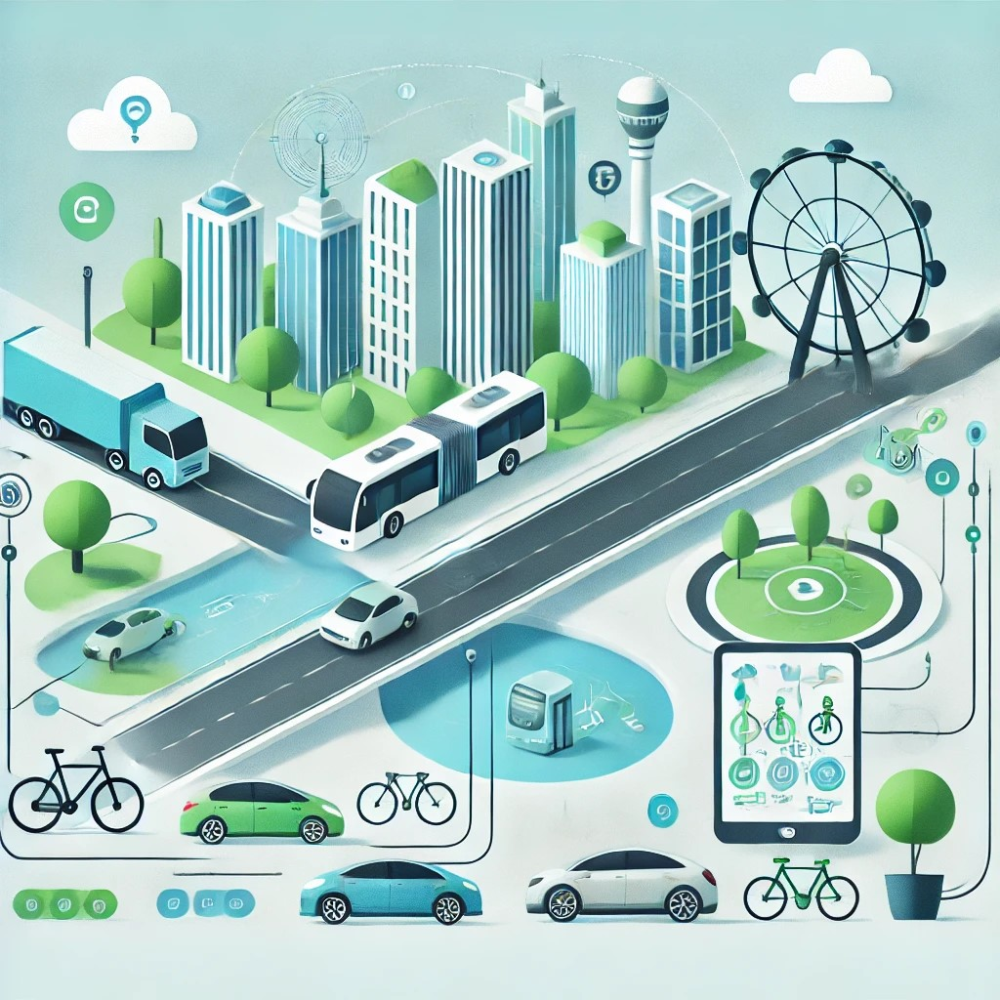

Revolutionizing Daily Travel with Real-Time Insights
With real-time data and strong tools to help commuters make more informed travel choices, SmartCommute is revolutionizing the way we move through our cities. Regardless of your mode of transportation preference—public transportation, electric cars, cycling, or ride-sharing—SmartCommute provides real-time updates to make sure you arrive at your destination as quickly as possible.
Our cutting-edge technology pulls information from a variety of sources, including weather reports, live traffic feeds, transport timetables, and alerts about traffic congestion, to provide you with a comprehensive picture of your commuting choices. Put an end to speculating. SmartCommute makes sure you make well-informed decisions at every turn, which helps you save time, feel less stressed, and enjoy your commute more.
- Public Transportation Integration: Get instant access to up-to-date bus and rail schedules to reduce wait times and guarantee you don't miss any connections.
- Real-Time Traffic Monitoring: With the ability to select different routes and prevent delays, real-time traffic updates help you stay ahead of traffic jams and accidents.
- Sustainable Commute Options: By recommending bike routes, local electric vehicle charging stations, and ride-sharing services, SmartCommute encourages environmentally friendly travel and helps you lessen your carbon footprint.
- Seamless Route Optimization: Whether you're combining multiple forms of transport or sticking to one, SmartCommute helps you plan the most efficient journey, saving you both time and money.
- Weather Alerts: Be ready for any weather-related delays to your commute. In order to assist you in selecting safer and more comfortable travel options, SmartCommute modifies its recommendations depending on real-time weather data.
Why SmartCommute?
With more commuters choosing eco-friendly modes of transportation and looking for solutions to escape the aggravating traffic, SmartCommute is the ideal tool for organizing your everyday trip. With our easy-to-use interface, you can compare projected arrival times, swiftly examine alternate routes, and select the most ecologically responsible mode of transportation. SmartCommute is the companion you need to maximize your daily travel, whether you're traveling to work, doing errands, or going on a leisurely excursion.
